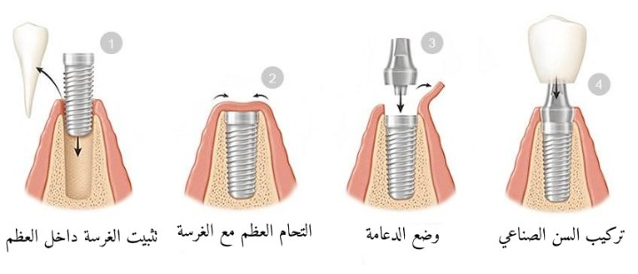
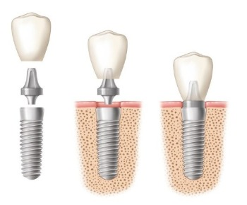
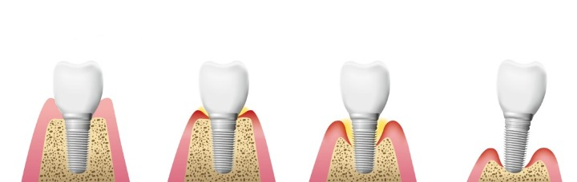

علاج وزراعة الأسنان
تعرَّف من خلال مقالاتنا على أحدث تقنيات علاج الأسنان، وأنجح الأساليب الوقائية للتمتع بأسنان صحيَّة قويَّة، إضافة إلى عمليات زراعة الأسنان، والجسور، والتقويم، وغيرها من المعلومات المتنوعة

تعرف على عملية زراعة الاسنان ميزاتها و كيف تتم
ماهي عملية زراعة الأسنان؟
زراعة الأسنان واحدة من علاجات استبدال الأسنان المفقودة، حيث أصبحت مؤخراً طريقة علاجية متكاملة في طب الأسنان لعلاج فقد الأسنان الكامل والجزئي كما أن زراعة الأسنان تتمتع بالعديد من المزايا أكثر من أطقم الأسنان التقليدية.
لذا يمكننا القول بأن زرعة الأسنان هي عبارة عن جذر مصنوع من مواد ملائمة، ويتم زرعها لتوفير الثبات والدعم للتعويضات الصناعية الثابتة أو المتحركة.
جدول المحتويات
عملية زراعة الأسنان بالصور

مدة زراعة الأسنان في تركيا
عادة ما يمكن أن تستمر عملية زراعة الأسنان بين ستة إلى ثمانية أشهر وتتطلب إجراءين جراحيين.
- في الموعد الجراحي الأولي، يتم وضع الزرعة أو جذر الأسنان برفق في تجويف العظام بدلاً عن السن المفقود.
- يمكن أن يتم الإجراء باستخدام التخدير الموضعي أو التخدير العام للمرضى القلقين.
- عندما يشفى عظم الفك، ينمو حول الغرسة ويثبتها في مكانها، عادة ما تستغرق عملية الشفاء هذه ما بين ثلاثة إلى ستة أشهر، اعتماداً على المريض.
- بمجرد أن يتم التحام الزرعة بقوة بالعظم، تبدأ المرحلة الثانية، سيكشف جراح الفم أو طبيب الأسنان عن الزرعة يضع هيكل صغير يسمى الدعامة، والتي ستكون بمثابة مرساة للأسنان الصناعية.
- يتم إنشاء ووضع الأسنان الاصطناعية أو التاج من قبل طبيب الأسنان، سيأخذ قالباً ويرسل النموذج إلى مختبر الأسنان الذي سيصنع الأسنان البديلة لتلبية المواصفات الخاصة بك. يتطلب الوضع النهائي للسن فقط موعداً قصيراً وبسيطاً
- قي حالات مختارة، جعلت التطورات في تكنولوجيا زراعة الأسنان من الممكن استخراج الأسنان ووضع تيجان في زيارة واحدة، مما يبسط العملية الجراحية بشكل كبير.
اقرأ أكثر : ميزات وعيوب زراعة الأسنان الفورية في تركيا

زراعة الاسنان بدون جراحة
كبديل عن طريقة الزرع التقليدية التي غالباً ما تتطلب خلعاً وفترة شفاء ووضع الزرعة ثم فترة شفاء أخرى، أظهر الزرع في نفس اليوم نتائج واعدة للغاية.
- قبل أيام من إزالة السن الطبيعي يمكن لجراح الفم التقاط الصور الرقمية ثلاثية الأبعاد للسن والخلايا المحيطة به، وهي السجلات التي ستعمل كنموذج أو نمط للسن الجديد.
- بعد ذلك ستُحال هذه السجلات إلى مختبر متطور حيث يمكن تصميم سن جديدة تماماً في غضون أيام فقط.
هذا الإجراء الرائد والمعروف باسم نظام استبدال الأسنان غير الجراحي، جعل إجراء الزرع أكثر كفاءة من التقنية التقليدية.
ما بعد زراعة الاسنان
في بعض الأحيان تكون الآثار المترتبة على الجراحة ضئيلة للغاية، لذلك قد لا تنطبق عليكم جميع التعليمات التالية ومع ذلك، عند الشك، اتبع الإرشادات أو اتصل بنا.
نصائح وتعليمات بعد زراعة الاسنان
يساهم وعي المريض والتزامه بالتعليمات في نجاح العملية باتباعه للنصائح التالية:
نظافة الفم
في اليوم التالي للإجراء، يوصى بأن تبدأ بالمضمضة بالماء المالح الدافئ (1 ملعقة صغيرة من الملح في كوب من الماء الدافئ)
تجنب التدخين
من المستحسن أن تمتنع عن التدخين لمدة 3 أيام على الأقل بعد الجراحة، لأن هذا يزيد من خطر الإصابة بالعدوى وقد يؤخر الشفاء.
الحد من النشاط البدني
الحد من النشاط البدني خلال 24-48 ساعة الأولى بعد الجراحة. قد يؤدي الإجهاد المفرط إلى النزيف وعدم الراحة بعد الجراحة.
عندما تستلقي، ارفع رأسك على وسادة.
زيارات ما بعد العملية
من المهم العودة لزيارة الطبيب بعد العملية، بعد أسبوع إلى أسبوعين من العلاج. تواصل معنا اذا صادفتك اي أسئلة أو مشاكل قبل ذلك الوقت.


الأكل بعد زراعة الاسنان
يمكنك البدء بالأطعمة اللينة مثل البطاطس المهروسة أو المعكرونة أو الجبن أو البيض المخفوق الى أن يزول أثر المخدر الموضعي.
يمكنك استئناف نظام غذائي منتظم بمجرد أن يزول التخدير ويعود الشعور؛ ومع ذلك يفضل عدم محاولة المضغ مباشرة على مواقع الزرع.
خياطة زراعة الأسنان
الغرز المستخدمة في العملية قابلة للذوبان ما لم يُذكر خلاف ذلك، وسوف تسقط من تلقاء نفسها، ويحدث هذا بشكل عام في الأسبوع الأول بعد الجراحة، لكن يمكن أن يتراوح ذلك من 4 إلى 10 أيام.
اقرأ أكثر :عملية زارعة الأسنان في تركيا وانواعها وماهي الزراعة الفورية
أسئلة شائعة حول زراعة الأسنان
أسئلة شائعة حول زراعة الأسنان
في معظم الحالات، تتسبب عملية زرع الأسنان نفسها بألم بسيط جدا للمريض ولكن بمجرد زوال المخدر، غالباً ما يشعر المرضى بقدر من الانزعاج، هذا بالطبع يختلف من مريض لآخر بناءً على مستوى تحمل الألم وتعقيد العملية.
عادة قد تشعر ببعض الألم والانزعاج حتى 10 أيام بعد الجراحة لكن طبيب الأسنان يقوم بوصف مسكنات الألم للمساعدة سيكون هناك أيضاً تورم، ويجب أن يهدأ بعد حوالي 3-5 أيام. تسبب زراعة الأسنان آلاماً ولكن لمدة تتراوح بين أسبوع الى 10 أيام كحد أقصى.
لم يتم العثور على صلة مباشرة بين زراعة الأسنان وسرطان الفم، ولكن في كثير من الحالات يظهر سرطان الفم حول زراعة الأسنان على أنه التهاب مزمن.
يعد معدل فشل زراعة الأسنان مرتفعاً جداً لدى مرضى السكري لأن الأشخاص الذين يعانون من مرض السكري من النوع 1 أو النوع 2 قد يستغرقون وقتاً طويلاً لشفاء جرح الغرسة الجراحية كما أن مرضى السكري أكثر عرضة للإصابة بالالتهابات.
يقوم أطباء الأسنان باتباع الخطوات التالية لزراعة الأسنان: • الإستشارة والمعاينة وإجراء الفحوصات اللازمة. • شق جراحي لفتح اللثة وكشف العظام. • ثقوب عميقة في العظام، حيث سيتم تركيب غرسة زراعة الأسنان. • تثبيت الدعامة.
يبدأ الشعور بالألم بعد زوال مفعول المخدر، ليس هذا وحسب، بل يبدأ ظهور بعض التورمات التي تصل ذروتها في اليوم الثالث والرابع، ولكن ستشعر بالتحسن بعد مرور أسبوع على الزراعة. وستبدأ بالأكل والمضغ بشكل أفضل بعد مرور أسبوعين، كما لو كنت مع أسنانك الطبيعية.
تكلفة زراعة الأسنان هي 250 يورو للسن الواحد.
إن زراعة الأسنان عبارة عن أداة جراحية توضع في عظم الفك، وتترك لتندمج مع العظم على مدى بضعة أشهر. تعمل زراعة الأسنان كبديل لجذر السن المفقود.
زراعة الأسنان الفورية أو زراعة اليوم الواحد بشكل مبسط، فهذا النوع من زراعة الأسنان يهدف إلي تركيب الأسنان في نفس يوم الزراعة، وهو الأمر الذي يعفي المريض من الحرج من عدم وجود أسنان .
غالباً تتسبب الالتهابات وسوء نظافة الفم برائحة الفم الكريهة، ولحسن الحظ أنه يمكن علاجها.
مخاطر زراعة الأسنان
لاتختلف زراعة الأسنان عن أية عملية جراحية أخرى من حيث المخاطر والمشاكل التي نأتي على ذكرها في مايلي:
- التهابات في موقع الزرع.
- إصابة أو تلف في الهياكل المحيطة، مثل الأسنان الأخرى أو الأوعية الدموية.
- تلف الأعصاب، والذي يمكن أن يسبب الألم أو التنميل في أسنانك الطبيعية أو لثتك أو شفتيك أو ذقنك.
- مشاكل الجيوب الأنفية، عند زراعة الأسنان في الفك العلوي في أحد تجاويف الجيوب الأنفية.

تحرك السن المزروع
في بعض الأحيان، قد تتحرك زراعة الأسنان وهي سبب شائع للقلق بين المرضى، في ما يلي بعض الأسباب الشائعة:
- فشل الالتحام العظمي مع جذر السن المزرع.
- فقدان العظام المفرط.
- التهاب حاد في محيط الزراعة
من السهل التنبؤ عندما يبدأ السن المزروع بالتحرك لذلك، يُنصح بزيارة طبيب الأسنان لفحصه وإجراء الأشعة السينية للتأكد من حالة الزراعة.
سيضمن ذلك الكشف عن الالتهابات مبكراً بما يكفي للعلاج، يمكننا في مركز علاجك الطبية وبفضل معداتنا الحديثة وخبرة أطبائنا إصلاح أية مشاكل في الأسنان بكفاءة ودقة عالية.
اقرأ اكثر : مراحل زراعة الاسنان في تركيا
ألم شديد بعد زراعة الاسنان
كما ذكرنا سابقاً فمن الطبيعي أن يشعر المريض بألم بسيط أو متوسط لفترة لا تتجاوز ال10 أيام لكن إذا استمر الألم أكثر من ذلك أو تلاشى ثم ظهر بعد فترة شهر فأكثر فلابد من وجود مشكلة تتلخص في عدد من العوامل:
-
- ضعف إمدادات الدم إلى الموقع.
- التهابات.
- تلف الأنسجة أو الأعصاب.
- زيادة الحمل والضغط على الزرعة.
- مرض مناعي ذاتي.
تكلفة زراعة الأسنان في تركيا 2021
تكلفة زراعة الأسنان في تركيا للزرعات الألمانية هي 250 يورو للسن الواحد. يمكننا من خلال تواصلكم معنا تقييم حالة الزرعة وإعداد أفضل خطة علاجية وبأسعار مناسبة. وخصومات خاصة لزوار موقع علاجك الطبية
تجربة زراعة الأسنان في تركيا


اطلع على أحدث المنشورات والأخبار الطبية
عمليات شفط الدهون بالفيزر في تركيا والأسعار 2021
يعتبر شفط الدهون بالفيزر من أفضل عمليات علاج السمنة المفرطة. تعرف معنا على مميزات وعيوب شفط الدهون بالفيزر وكيف تتم العملية وشاهد الفرق قبل وبعد في تركيا.
طرق علاج طول النظر في تركيا وأحدث التقنيات
يعاني الكثير من كبار السن وحتى البالغين من مرض طول النظر . سنتحدث في هذا المقال عن كيفية علاج طول النظر وأسباب هذا المرض ونسبة نجاح العلاج .
الفرق بين زراعة الشعر في ايران وتركيا 2021
بالرغم من أن أسعار زراعة الشعر بين تركيا وايران لا تختلف كثيرا إلا أن هنالك الكثير من الفروق التي قد تحدد لك الدولة الأفضل لزراعة الشعر فيها.
طرق علاج قصر النظر في تركيا وأحدث التقنيات
يعاني الكثير من الأطفال وحتى البالغين من مرض قصر النظر. سنتعرف في هذا المقال على أفضل طرق علاج قصر النظر وأسباب هذا المرض ونسبة نجاح العلاج .